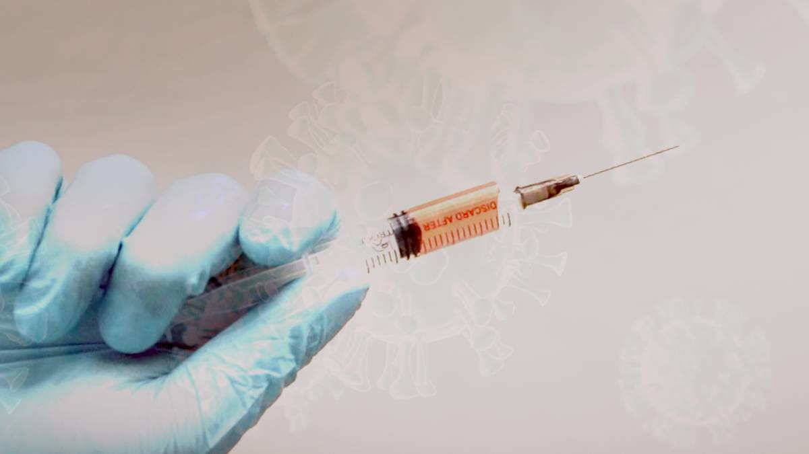
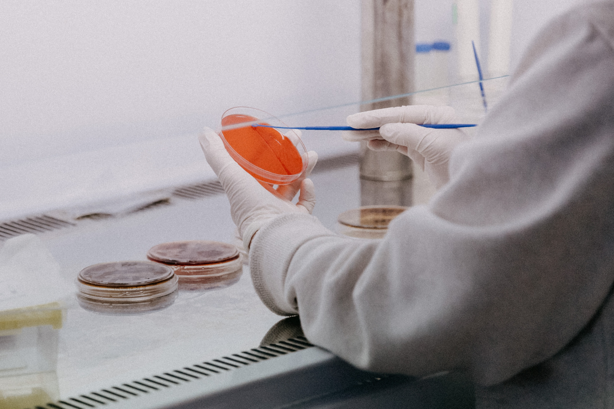

Apple pagará 113 millones de dólares por volver lentos iPhones viejos.
Este jueves, Joaquín Duato, vicepresidente del Comité Ejecutivo de Johnson & Johnson, reveló en una conferencia que la farmacéutica Janssen, perteneciente a la multinacional estadounidense, prevé tener la vacuna contra la covid-19 en el segundo semestre del año 2021 a un precio inferior a los 10 dólares (aproximadamente 36.500 pesos colombianos con el cambio actual).
El estudio de esta vacuna en la que en sus ensayos de fase III participa España, que fue aprobado ayer en ese país por la Agencia Española de Medicamentos y Productos Sanitarios, tiene previsto garantizar la vacuna “en algún momento del primer o segundo semestre de 2021”.
Según lo informado por el directivo de Johnson & Johnson, en el Encuentro Sectorial del Sector Sanitario, organizado por IESE Business School, con la colaboración de la consultora McKinsey & Company, la farmacéutica Janssen ha trabajado en la cadena de suministros para poder ofrecer así mil millones de vacunas para el próximo año a través de una red de colaboración.
A propósito Duato expresó que “durante los próximos seis meses habrá buenas noticias, podremos ver cómo estas vacunas eficaces estarán disponibles para el público”, quien además señaló que la vacuna en la que trabaja su equipo también garantizará “los estándares de calidad y seguridad” anunciados por otras compañías del sector que trabajan arduamente por obtener la vacuna contra la covid-19.

“No es una situación competitiva, es una cuestión social y una crisis global en la que necesitaremos varias vacunas, no solo una, porque debemos vacunar a millones de personas”, resaltando así, la importancia de la colaboración entre diferentes industrias farmacéuticas para encontrar pronto una vacuna.
Johnson & Johnson trabaja junto a los gobiernos en planes de acceso y distribución, con el propósito de garantizar la vacunación de toda la población. Uno de estos proyectos es COVAX, al que destinarán 500 millones de dosis de su producción para los países de rentas más bajas.
“Buscaremos garantizar el acceso a la vacuna en todos los territorios, el precio no será de más de 10 dólares por vacuna”, enfatiza la compañía con respecto a que el precio no se centrará en el lucro.
Estos anuncios, a los que se suman el 95 % de eficacia de los primeros resultados clínicos de Pfizer y Moderna, suponen que muy pronto se podrá detener la pandemia y con ella, todo lo que ha ocasionado a nivel de la salud física y mental, y también, la economía, y más aún cuando la cifras de contagio en el mundo siguen aumentando.
En el caso de Colombia, este jueves, el Ministerio de Salud reportó que llegó a 1.225.490 casos de coronavirus, anunciando así 7.487 nuevos contagios y 198 muertes en las últimas horas.
Por su parte en Estados Unidos, hoy se tomaron de nuevo medidas de prevención en New York, entre ellas, el cierre de los colegios de manera indefinida, dado el incremento de casos de contagio, el cual superó el 3 por ciento.